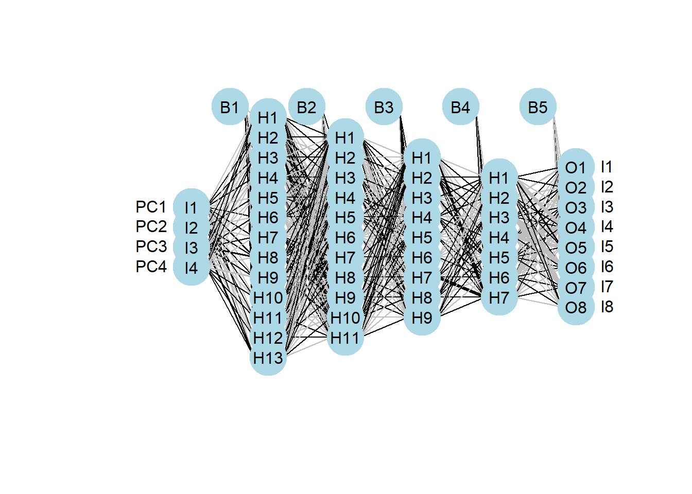

Lab aims and steps:
1. Use neural network to classify covid-19 variants
2. Cross-validating our model
3. Compare classification methods
4. Module 3 write-up
Due: Module 3 write-up is due 11/2 at 1:30 PM. Details of the assignment are at the end of this document.
In lab module 3 we are focusing on using tools of machine learning to describe and predict the spread of covid-19. In the first week we focused on generating SIR models and using classification methods to make predictions about an emerging variant. This week, we are going to learn how to use neural networks to classify covid-19 variants and compare the neural network to the k-nearest neighbor method.
Like the first week of this module, we are going to use sars-cov-2 spike protein sequences to classify variants. The spike protein plays an important role in binding of the sars-cov-2 virus to human cells, and influences the transmission and virulence of the disease (eg, Huang et al 2020). The protein sequences come from NCBI, which has a decent dashboard for downloading covid related data.
To classify the emerging variant, we are going to use a neural network which, like in the first week of this module, starts with principle component analysis (PCA) to reduce the dimensionality of the data (protein sequences are quite complex).
Like the k-nearest neighbor method, neural networks use both training and test datasets. We use the training dataset to classify the emerging, or unknown, variant in the test dataset. Neural networks do a lot better when they have a lot of data to use for training. So, I made the training dataset for this week much larger. It is a total of 280 sequences with 35 from each of the following variants: Alpha, Beta, Delta, Lambda, Mu, Omicron, and Omicron BA.2, and Omicron BA.5. When training, the Omicron and Omicron BA.2 are classified as the same variant.
The code below gets all of the required packages loaded. Be careful, you will have to install many of them! It also loads the sequence data along with the variant IDs. The sequences_train dataset is the same from the first week of the module. However, I added some additional sequences in a file called sequences_train2 and the additional Omicron BA.2 sequences in sequences_test. All datasets can be found on Canvas.
The code below combines all of those sequence files into one large dataset because this week we are not going to deterministically designate a subset of sequences to be the test sequences. Instead, we are going to randomly subset sequences so that we can perform what is called cross-validation of our classification models. We will discuss this more later!
# required packages
require(ape)
require(kmer)
require(class)
require(ggfortify)
require(neuralnet)
require(caret)
require(nnet)
require(dplyr)
# import data, the data come in what is called fasta format
train <- read.FASTA("/Users/17163/Documents/DSEE/Labs/Covid/sequences_train.txt",type="AA")
train2 <- read.FASTA("/Users/17163/Documents/DSEE/Labs/Covid/sequences_train2.txt",type="AA")
BA2 <- read.FASTA("/Users/17163/Documents/DSEE/Labs/Covid/sequences_BA2.txt",type="AA")
BA5 <- read.FASTA("/Users/17163/Documents/DSEE/Labs/Covid/sequences_BA5.txt",type="AA")
# combining datasets
comb <- c(train, train2 ,BA2, BA5)
# add data IDs (variant)
vID <- c(rep("Alpha",10),rep("Delta",10),rep("Beta",10),rep("Omicron",10),
rep("Alpha",10),rep("Beta",10),rep("Delta",10),rep("Omicron",10))
vID2 <- c(rep("Alpha",15),rep("Beta",15),rep("Delta",15),rep("Omicron",15),
rep("Lambda",35), rep("Mu",35))
vIDBA <- c(rep("BA2",35),rep("BA5",35))
vID_t <- c(vID, vID2, vIDBA)Now that we have our data in R and formatted, we can produce our distance matrix and run the PCA (review Module 3 – Part 1 for more details). Except this time, instead of only producing two variables (principal components), we are going to produce four.
Note, the code also does some housecleaning like putting the principal components and variant IDs into a dataframe, names the variables, and changes variant IDs to numbers. We change the variant IDs to numbers because that is how the neural network function outputs them.
# calculate distance matrix
mat_t <- kdistance(comb,k=2, method = "edgar")
# reformat into square matrix
re_mat_t <- as.matrix(mat_t)
# principal component analysis
pcs <- cmdscale(re_mat_t, k=4, eig = TRUE)
# reformat into dataframe
data_NN <- data.frame(pcs$points[,1],pcs$points[,2],pcs$points[,3], pcs$points[,4],as.factor(vID_t))
names(data_NN) <- c("PC1", "PC2", "PC3", "PC4", "ID")
# change ID labels to numbers for neural network
data_NN$ID <- recode(data_NN$ID, Alpha = "1", Beta = "2",
Delta = "3", Lambda = "4",
Mu = "5", Omicron = "6", BA2 = "7", BA5 = "8")The next bit of code changes IDs into what is called a one-hot vector. This produces a unique vector ID for each variant (print the data to visualize it). We do this because the neural network function does not like to use factors (in this case the variant ID is a factor with 6 levels).
# Encode ID as a one hot vector (give each class its own column)
# make ID a factor with order levels 1-8
data_NN$ID <- factor(data_NN$ID, levels = c("1","2","3","4","5","6","7","8"))
# class.ind function is from nnet package
data_NN <- cbind(data_NN[, 1:5], class.ind(as.factor(data_NN$ID)))
# Set labels name
names(data_NN) <- c(names(data_NN)[1:5],"l1","l2","l3","l4","l5","l6","l7","l8")We are ready to randomly subset our data into training and test groups. I have designated that 80% of the data will be training and 20% will be test. The random subsetting is done with the sample() function. Replace = F means the sampling is done without replacement. Do some Googling if you do not know what that means!
# produce random subset for training and testing datasets
samp <- sample(1:nrow(data_NN),round(nrow(data_NN)*.8), replace = F)
train.NN <- data_NN[samp,]
test.ID <- data_NN[-samp,]Drum-roll please! We are now to the point of using our training dataset to build the neural network. Recall that a neural network simulates how our brain works. It is a connected set of neurons (called perceptrons) that take input data (eg, the principal components we produced) and produce output (eg, classification into variants) that minimizes error. This is similar in concept, but very different in execution, to the minimization of sum of square error that we did in Module 3 – Part 1 with SIR model parameter optimization.
In the neural network, the neurons are organized into hidden layers (can be one or many) and like neurons in real life they can pass information from one neuron and from one layer to the next. How much information is passed on from one neuron to the next is called a weight and neurons can receive information from many other neurons. A neuron combines the weights it receives from other neurons and uses them to determine their activation (or firing) via an activation function (in our network the function is logistic). The activation function determines what is sent to other neurons or the output.
Remember, the details of these interactions between input, hidden layers, and output are based on minimizing error using the known classifications given in the training dataset.
The specific type of network we are producing is called a
feed-forward neural network because information flows in one direction
from the input through the hidden layers and to the output. There is no
looping back or recurrent connections. The other two main types of
neural networks are recurrent
(RNN) and covolutional (CNN). RNN are good for sequenced or time
dependent data and CNN are used for image and video processing.
# generate neural network
NN <- neuralnet(l1 + l2 + l3 + l4 + l5 + l6 +l7 + l8 ~ PC1 + PC2 + PC3 + PC4, data = train.NN, hidden = c(13,11,9,7), linear.output = FALSE, act.fct = "logistic", stepmax = 3e+06)I dictated that the network have four hidden layers with 13, 11, 9, and 7 neurons per layer (you can use the help documentation to explore the rest of the arguments in the function). The number of layers and neurons is something that you can modify when trying to improve the fit of your model.
**NOTE: the network will take some time >20 sec to run. If it appears that the network was produced very quickly (in a few sec), then it failed to run and you need to re-run it. This may cause a low cross-validation rate (see next section).
I found a cool function on Github for plotting neural networks. The code is below. If you cannot directly access the code using the url provided below, then you can just try using the standard plot function. The code for that is given below, as well. However, I have found that with a network as large as ours the standard plot function does not work well.
If you cannot produce a satisfying plot of the network itself, do not worry. Visualizing the network does provide a sense of accomplishment and it looks pretty. But you cannot extract anything super meaningful to interpret from it.
# plot neural network
# import the function from Github
require(devtools)
source_url('https://gist.githubusercontent.com/fawda123/7471137/raw/466c1474d0a505ff044412703516c34f1a4684a5/nnet_plot_update.r')
# fancy plot neural network
plot.nnet(NN)
# standard neural network plot
plot(NN)Next up, we need to assess the utility of our model using cross-validation. Cross-validation is a method of out-of-sample testing to determine the generalizability of a statistical model. Basically, we build the model using our training dataset, then test the model with our test dataset. What is the output of cross-validation? In our case, it is a proportion or percentage indicating how many of the sequences in the test dataset were assigned to the correct category (variant).
This is a little different than the way we did things in the first week of the module. There, we skipped this validation step and just used our model to classify unknown variants. However, cross-validation using a test dataset with known categories (variants) is critical to building the best possible model. Why is this? Because if you just test the model using your training dataset, then you risk your model overfitting to your data. What this means in practice is you could build a model that is really good at categorizing your training data but no other data. If your model is not generalizable, then it has no utility. Remember the ultimate goal here is to categorize sequences from unknown variants.
# Test the network with cross-validation
# Create test dataset without IDs
test <- subset(test.ID, select = c("PC1", "PC2", "PC3", "PC4"))
# Predict results (classify sequences)
NN.results <- predict(NN, test)
# Compare predicted to actual (% correctly labeled)
# find variant with highest probability and assign it as the variant
results1 <- apply(NN.results, 1, which.max)
# calculate proportion of assigned classes that are correct
length(test.ID$ID[results1==test.ID$ID])/nrow(test.ID)## [1] 0.7678571The neural network you produced above should have a validation of somewhere around 70-80%, which is pretty good! Note, that your numbers will be different than mine because subsetting the dataset into the train and test groups is random.
However, there are also a lot of ways you can make it better:
Increase the number of training sequences. Neural networks always do better with more information.
Increase the number of principal components (we used 4). Why? See the reason for number 1.
Increase the number of neurons and hidden layers. There is no set rule for the appropriate number of hidden layers or neurons in a network, except that generally speaking increasing model complexity (more layers and neurons) is better. Note, if you increase the number of hidden layers and neurons you may need to increase the number of steps the algorithm goes through to train the network (this is the “stepmax” argument within the neuralnet function). As you add layers and steps you are asking more and more of your computer. It may take a while for it to produce the model. I recommend saving your work regularly.
See if you can increase the correct classification percentage!
Let’s compare our neural network to the k-nearest neighbor method from the first week of this module. To do so, you first need to run the knn function code (it is just one line of code!!) I gave you last week using the expanded training and testing datasets from this week. Then, you need to calculate the proportion of correctly assigned variant classes by modifying the last line of code I gave you in part 2 above.
You do not need to run the code in this subsection. It is just additional code I wanted to include because I am a nerd.
Below is code for multiple sub-sampling cross-validation of your network. This is a more accurate validation of your model because it parses data into both the training and testing groups (depending on the iteration). Whereas, a singular split (as we did above) results in data parsed into only one of the two groups, which could bias the results.
WARNING: The runtime on this code can be quite long. So be patient.
# Monte Carlo cross-validation
# vector for percent correct values
perc_correct <- numeric(10)
i <- 1
#while loop for generating 10 cross-validations
#we use a while loop to re-run iteration if the model fails
while (i <= 10) {
# Partitioning of data into test and train groups
samp <- sample(1:nrow(data_NN),round(nrow(data_NN)*.8), replace = F)
train.NN <- data_NN[samp,]
test.ID <- data_NN[-samp,]
# generate neural network
NN <- neuralnet(l1 + l2 + l3 + l4 + l5 + l6 + l7 + l8 ~ PC1 + PC2 + PC3 + PC4, data = train.NN, hidden = c(13,11,9,7), linear.output = FALSE, act.fct = "logistic", stepmax = 3e+07)
# Create test dataset without IDs
test <- subset(test.ID, select = c("PC1", "PC2", "PC3", "PC4"))
# Predict results (classify sequences)
NN.results <- predict(NN, test)
# Compare predicted to actual (% correctly labeled)
# find variant with highest probability and assign it as the variant
results1 <- apply(NN.results, 1, which.max)
# calculate proportion of assigned classes that are correct
perc_correct[i] <- length(test.ID$ID[results1==test.ID$ID])/nrow(test.ID)
if (perc_correct[i] < 0.25) {print("model failure")} # if model fails to run (results in very low % correct)
# if model fails to run - re-run iteration
if (perc_correct[i] > 0.25) {print(i)} # if model successfully runs - print iteration
if (perc_correct[i] > 0.25) {i <- i + 1} # if model runs successfully - move to next iteration
}
#mean percent correct across iterations
mean(perc_correct)Your lab write-up for module 3 is a short (3-5 total pages, including figures), but complete scientific paper that includes introduction, methods, results, discussion, and literature cited sections.
Due: Monday, 11/7 at 11:59 PM, Points: 60 pts.
Your write-up should:
1) Address the following question:
- How do the knn method and neural network compare when used to assign sars-cov-2 spike protein sequences to variants and predict the Ro within the SIR model framework?
2) Include a methods section describing where data was accessed, how it was analyzed, and how appropriate analyses were compared.
3) Include publication quality plots of:
- optimized model infection parameters (from Part 1, you do not need to include the variants added to the dataset in part 2)
- principal component plot (from Part 1)
- a plot that compares the validity of the knn method and neural network (perhaps just a simple barplot of percent correct classification?)
4) Use both the knn method and neural network to predict the variant and Ro of 5 sequences from NCBI (use the same dashboard from last week) that we have not used in either part 1 or part 2 of this assignment. If your unknown sequences are assigned to variants added in part 2, then we did not estimate their R0 values. Just use an R0 value you can find from a peer-reviewed, published paper.
5) Include a discussion section with all the requisite parts including methodological limitations and future directions. Comparison to the literature at large can be limited to one paragraph.
6) Include a literature cited section. I do not care how it is formatted.